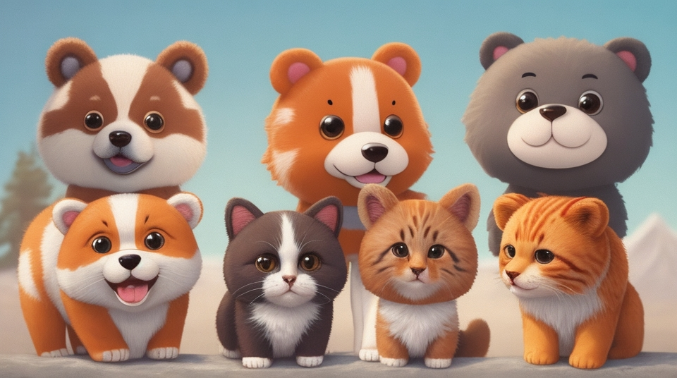

Lions are amazing animals that belong to the cat family. They are the second largest cats in the world, after tigers. They live in groups called prides, which consist of several females, their cubs, and one or two males. Lions are mostly active at night and hunt a variety of prey, such as zebras, giraffes, and antelopes. They can run up to 80 km/h (50 mph) and have powerful jaws and claws to catch and kill their food.
Lions have many distinctive features that make them stand out from other cats. The most obvious one is the mane of the male lion, which is a thick fur that covers his head, neck, and shoulders. The mane can be different colors, from light brown to black, and it shows his strength and health to other lions. The female lion, or lioness, does not have a mane, but she is smaller and faster than the male. She also does most of the hunting for the pride, while the male protects the territory and the cubs.
Lions are very social animals that communicate with each other through sounds, gestures, and body language. They can roar very loudly, which can be heard up to 8 km (5 miles) away. They use their roar to mark their territory, warn off intruders, or call for help. They also purr, snarl, growl, and grunt to express their feelings. Lions can also rub their heads, lick each other, or nuzzle to show affection and bond with their pride members.